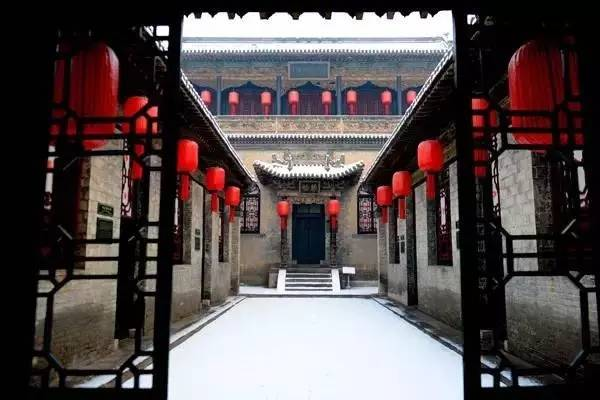
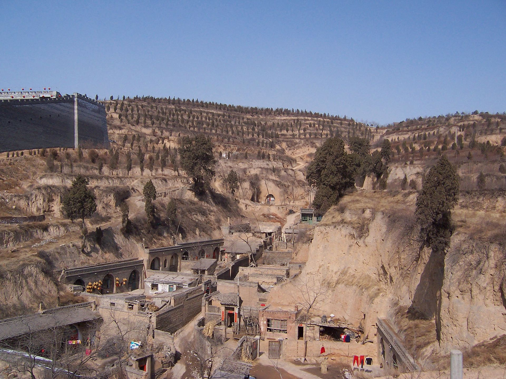
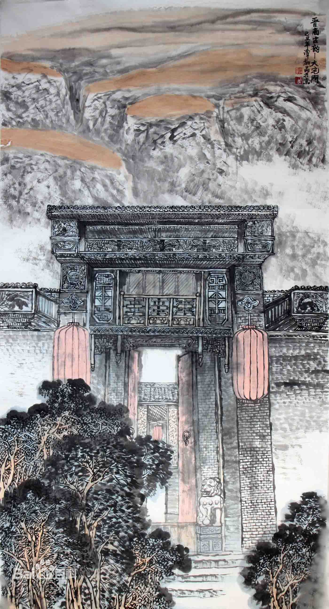

The dignity of Jin School architecture lies in its imposing Qiao family compound, with arches and flying eaves, colorful decorations and gold decoration, brick and tile rubbings, city buildings made in detail, and more than 300 houses in six compounds in a staggered manner, showing the steady atmosphere and rigorous depth of Jin merchants.
Jin school is just a general term, not only refers to the area of Shanxi, but also includes Shaanxi, Gansu, Ningxia and parts of Qinghai. Among these regions, the architectural style of Shanxi is the most mature, so it is collectively referred to as Jin School architecture.
Yaodong
A yaodong or "house cave" is a particular form of earth shelter dwelling common in the Loess Plateau in China's north. They are generally carved out of a hillside or excavated horizontally from a central "sunken courtyard".
The earth that surrounds the indoor space serves as an effective insulator, keeping the inside of the structure warm in cold seasons and cool in hot seasons. Consequently, very little heating is required in winter, and in summer, it is as cool as an air-conditioned room.
The history of yaodongs goes back centuries, and they continue to be used. In 2006, an estimated 40 million people in northern China lived in yaodongs.
In the last decade, yaodongs have been brought to the attention of scientists and researchers. These traditional dwellings have been regarded as an example of sustainable design

Qiao Family Courtyard
Qiao Family Courtyard, also known as Zhongtang, is located in Qiao Family Fort Village, Qi County, Shanxi Province, built in 1756, the entire compound is in the shape of a double "hi", divided into six courtyards, set of 20 small courtyards, 313 houses, construction area of 4,175 square meters, three sides of the street, surrounded by a fully enclosed brick wall of more than 10 meters high, the gate is a city gate type It is an ancient house with traditional northern residential architectural style.
There are more than 5,000 precious cultural relics on display in the Qiao Family Compound, reflecting the folk customs mainly in the area of Jinzhong, Shanxi Province; displaying agricultural customs, life rituals, annual festivals, clothing, food, housing and transportation, business customs, folk crafts; also setting up displays of Qiao family history, Qiao family treasures, film and television topics.
The Qiao Family Courtyard is a majestic and spectacular architectural group with exquisite design and fine craftsmanship, embodying the unique style of Chinese Qing Dynasty residential architecture, which has considerable ornamental, scientific research and historical value, and is an unparalleled artistic treasure trove, known as "a pearl of northern residential architecture" and known as "At the 2018 China Yellow River Tourism Conference, the Qiao Family Compound was named one of the "50 Views of the Yellow River in China".
